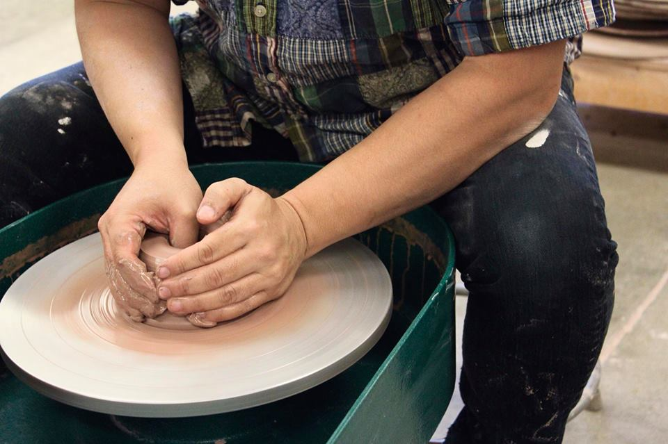

Kensuke Yamada
Visiting Assistant Professor of Art

"It’s a kind of time where you try to figure things out. What I studied in Japan was speech pathology, and then I came to the States. So, if you come this far, you’ve got to study something you’ve always wanted to study. So, I took an art class, and the class seemed like it was substituting for English. It was a communication tool in which I could make American friends. At that time, my English wasn’t good, but through taking an art class, I found a way to communicate with people. I would make a certain piece with a certain concept, and then we could talk about that work. So, I kept taking art classes after that.
So like I said, at that age, I was a speech pathology major, and I was really not sure that that was what I wanted to do. When I chose to do art, I was really not sure that that was what I wanted to do. But, you keep pushing it and pushing farther and farther and farther and thinking I might still like it in the future, and I still like it. So, I guess I was lucky to find something I like in college."
“There is a lot of fear in moving to a new place, but it’s worth it because you see that there are still people here and they’re eating and laughing and crying just like everyone else. And we have a study abroad program here, and that’s gold. You get to see something different, or if you go to a place that doesn’t speak English, that would be interesting because, surprisingly, they just live like us, so there’s not much difference. I think it’s important to face that.
It’s an interesting thing because whenever you move, you think something is going to change. You think, “I’m gonna change my life” and move to places. But then you realize that if you repeat the way you are, wherever you go, it’s just going to be the way you are. You can’t just depend on another source to change your life. It does give you that opportunity to try something, but you still have to try to change something in your life. So, it’s not just coming to America that changed my life. It gave me the opportunity to try something different, which was art for me, something I wouldn’t do in Japan. So, even if you go to a different place, it’s kind of the same if you sit there for years and years. You are the one who has to go and make a change there. So for me, the U.S. and Japan ended up the same. I live in the same way. I have to make an action to change something. Wherever you go, that’s your opportunity to do something different or try and change. You are the one that makes the difference. It comes to the point that people are still people."